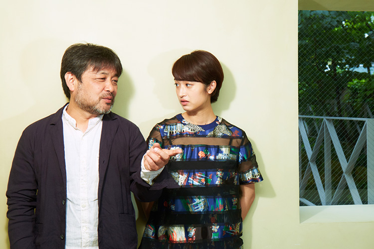
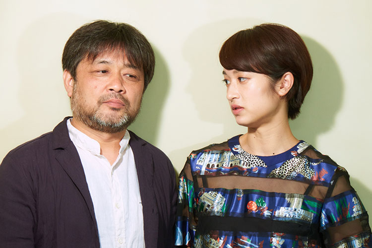
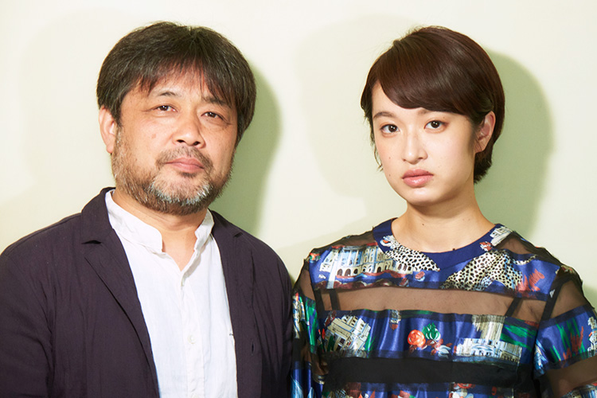
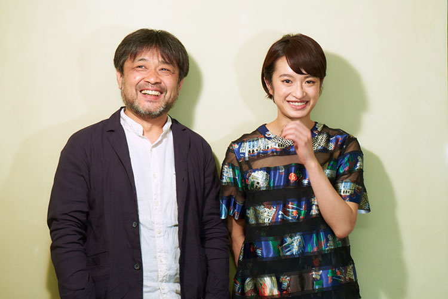

国内外で話題を呼んだ『開拓者たち』『ラジオ』はじめ、数多くのドラマやドキュメンタリー番組を手掛けてきた映像作家、岸善幸の映画初監督作『二重生活』が、６月２５日より全国公開される。原作は、フランスの現代美術家、ソフィ・カルの実験的パフォーマンスに着想を得た小池真理子による同名小説で、大学院で哲学を専攻する女子学生が論文のテーマ「哲学的尾行」の実践を契機に、それまでの穏やかな日常が揺らいでいく物語。本作にて主人公の女子学生、白石珠を演じるのは、これが単独初主演となる女優、門脇麦。まるで現象を記録していくような岸監督の独自の演出術の下、いかにして、実在感ある女性を演じたのか、２人に話を聞いた。
演出も撮影もアプローチを変えながら、リアルな映像を求めていく。「お芝居を記録していく」という考え方でやっているんです。（岸）
門脇さんは、初号試写で作品を客観的に面白いと思えたのはこの作品が初めてだったそうですね。
門脇：
出演した作品を観る時、どのシーンを観ても「ここ大変だったな」とか「このシーンは何テイク目を使ったのかな」とか、現場の空気が記憶にこびり付いているので、自然と自分の粗探しみたいになるんです。台本を何回も読んで、撮影してるわけですから、たとえ面白い作品だとしても、何が面白くて何が面白くないのか麻痺して分からなくなっていることも多くて。
作り手側の目線を拭えなくなるわけですね。
門脇：
そうなんです。でも今回はそういうことがなかったんです。あと、台本を読んだ印象と現場の雰囲気で、なんとなく出来上がりが見えたりするんですけど、今回は現場でそれが全く見えなくて、「一体これはどういう作品になるんだろう」って気持ちでした。初めて観た時に、想像がつかなかった部分のギャップにも驚きましたね。
撮影を通して、内容を熟知した上でも、新鮮に楽しめたんですね。
門脇：
話も理解してるつもりでしたけど、ちゃんと理解してなかったんだなって。出来上がりを観て「この映画ってこういう映画だったんだ」って（笑）
岸：
（笑） もちろん、白石珠という役を演じるということで言えば、当然、理解してやっていたと思うんです。ただ、珠以外の人物のシーンも併せてひとつの映画が生まれるわけですから、今の麦ちゃんの言葉は、他の人物のシーンを珠と関連付けていった完成形が想像を超えたものになったという意味だと思います。実は僕の想像も超えた完成形になりましたから。もしかしたら、関わったスタッフとキャスト、みんな同じ思いかもしれない。

岸監督は、例えば、絵コンテを描いて撮っていくようなやり方ではありませんよね？
岸：
絵コンテは描かないですね。この組の暗黙の了解なんですけど、技術スタッフ、美術スタッフ含めて、現場に役者さんを加えて、初めて分かってくることがあるんですよね。想像していたよりもリアルなものが見えてきて、そうなった段階で、付け足したり、排除したりしながら、シーン全体を決めていくので、絵コンテとして、ここで珠のアップ、ここで卓也（菅田将暉）がフレームインしてくる、というように先に決めてしまうと映像を限定してしまうような気がするんです。そうしないためにコンテは作らず、大体どんな感じでいくかは現場で初めて決めて、撮る。だから、即興に近いカット割をしていきます。そういう作り方ですね。
いわゆる長回しでも、あらかじめ構成の設計されたワンシーンワンカットとも違って、カメラを回し続けて、映像素材を撮り溜めていくような感覚に近いと思うんですが、リハーサルもあまりされないんでしょうか？
岸：
する時もありますし、無い時もあります。「もう麦ちゃんが役に入ってるな、すぐにやれそうだな」って思えば、すぐにカメラを回します。
現場で起こっていることを尊重するわけですね。
岸：
そうですね。
門脇：
演じる側としては、すごく居心地が良い現場でした。
門脇さんをこの珠役にキャスティングした決め手を聞かせてください。
岸：
『愛の渦』（三浦大輔監督）を観て、いつかは、と思ってたんですけど、決め手は、「目」でしたね。この作品は尾行シーンが重要なんですけど、尾行は基本的に台詞が無いわけです。表情に複雑な感情が出せる人でなきゃいけない。やっぱり「目」は重要なんで、『愛の渦』でも、その点で感じるものがあったので、麦ちゃんなら出来るだろうなと思いました。
この珠というキャラクターは、自然体の門脇さんが映っているように錯覚するほどでした。
門脇：
私は逆に、私じゃない私が映っている気がしたんです。
岸：
つまりそれは、珠ではあるけど自然体ってことになるのかな？
門脇：
結局、自分が思っている自分というのは、その範囲内の自分に過ぎないと思っているので、自分を出そうとする方が逆に自分って出せないと思うんです。現場ではそういう意識を排除しました。もしかしたら本当の私の姿が映ってるかもしれないけど、それは普段、私が気付いてない私の姿だと思うんです。自分の考える範囲を超えた私がいたから新鮮な目で観られたし、作品を客観的に観られたのもそういうことかもしれないです。
自意識からも解放された状態ということですか？
門脇：
そうですね。特に演技をしたみたいな感覚はなかったですね。

岸監督はこれまで手掛けられた映像作品が高い評価を得ています。監督に対して、どんなイメージを持たれていましたか？
門脇：
すごく興味がありましたし、ご一緒したいなと思っていました。私の理想形なんです。どの現場でもどの役柄でもその理想形を常に目指してはいますけど、なかなかその理想形がベースにある現場というか、敢えて口に出さなくてもそれが当たり前に存在する現場ってないので、すごく幸せでしたね。
岸：
映画に限らず、ドラマもそうですけど、役者さんの芝居をスタッフがどれだけ集中して、撮影するかだと思うんです。この組のやり方としては、いい芝居を導くために、演出も撮影もアプローチを変えながら、よりリアルな映像を求めていく、ドキュメンタリーを撮る感覚に近いんです。ドキュメンタリーには、何かを記録するって意味もあると思うんですけど、それと同様に、「お芝居を記録していく」という考え方でやっているんです。
門脇：
ドキュメンタリーという部分で言うなら、岸監督は生のものに触れてきた経験が多いと思うので、生のものにしか反応されないんです。芝居では誤摩化せないというか、そんな小賢しいものを要らないんだよ、みたいな（笑）
撮影中に、そういった監督ならではのセンサーみたいなものは感じました？
門脇：
私自身も作り込んだものは好きじゃないので、自分が常に目指しているものにビビッドに反応して下さるので、違和感は無かったんです。お芝居じゃなくて生のものを求めるとなると、自分自身の本物の何かが出てくるってことでしかなくて、残念ながら。もちろん役を通してるので、言葉も感情も完全な素というわけではないんですけど。
岸：
敢えて言葉で説明すると、そこに居るっていうリアリティが欲しいんです。簡単に言ってしまうと、「あるある」という感覚。そのリアリティを追っていくと、やっぱり実力のある役者さんは、醸し出してくるものがある。それを記録したいんです。
珠の感情についてはあまり話し合わず、モヤモヤを抱えたまま演じてもらったのも、リアリティを追求する意図ですか？
岸：
そうですね。僕は５２歳ですけど、２０代の女性である珠の心理って、正直全部説明しきれないんです。年齢的には麦ちゃんの方が近いわけです。麦ちゃんが理解してることの方が人に伝わるかもしれない。僕はそこにも期待していて、役者さんを放置するところがあるから、大変だったかもしれないですね。

（撮影の）夏海さんの高まりに合わせて自分も高めていく。1人だけのシーンでも夏海さんと芝居してるような感覚がありました。（門脇）
居酒屋の哲学討論シーンは実際の院生のエキストラとして起用されたとか。
岸：
まず、役の参考にするために、麦ちゃんに事前取材として哲学を専攻する女子学生に会ってもらって、お茶しながら色んな話を聞いてもらいました。居酒屋のシーンは、実際の院生に撮影の２時間前に入ってもらって、お酒を吞んでもらって、それで出来上がった頃に「それじゃあいきましょう」と。
実際の行程とは逆ですよね。演じるのではなく実際に哲学討論をしてもらって、その中に門脇さん演じる珠が溶け込むという。
岸：
その哲学討論の内容は、難しすぎてわからないんですけど（笑）
門脇：
何を話していたか内容を全く覚えてないですね（笑）
岸：
だから、撮影中も黙って聞いてました。
それが、劇中の珠の疎外感にも見えますよね。
岸：
そういうことが功を奏したかもしれないです。
終盤の石坂（長谷川博己）とのホテルのシーンでの珠の独白は、長台詞という意味でも、求めるリアル（芝居掛かっていない状態）との接合が難しかったのではないでしょうか？
門脇：
特に何も考えてなかったかもしれないです。単純に台詞を覚えて言いました。こういう言い方をするとすごくやる気の無い人みたいですけど（笑） 言葉の力は大きいので、事前に言葉と感情を１から10まできっちり理詰めをして、意味を持たせて喋るよりも、人間の感情なんて１から10まで説明できるものではないので、ただ言葉を紡ぐことによって、湧き起こってこないと思ってた感情が意外と湧き起こってくることがあると思うんです。あれだけの台詞の量で過去を吐露するシーンなので、考えないのが一番なんです（笑）
岸：
（笑）
門脇：
あのシーンは撮影の終盤だったので、それまでの蓄積があるし、空っぽにしてやっても、珠という役のブレない軸はもうあったから、勇気を持って頭を真っ白にしました。「考える」ということは安心材料になってしまうので。
それは、門脇さんの中に、元々あった演技指針なんですか？
門脇：
不器用なので、考えると自意識みたいなものばっかりが湧いてきてしまって、良い事がないので、考えないのが一番なんです。
その境地に至るって簡単ではない気がします。
岸：
才能だと思います。僕が思う実力派の俳優さんって、そういう領域にいる人。きっと演技をやったことがない人には理解出来ない感覚があると思うんです。役を生きているというか、そこに居てもらうというような注文を演出家がした時に、それを出来る人はそうはいない。僕はそういう芝居を撮ることが仕事だと思っているので、この作品は麦ちゃんをキャスティングした時点で9割終わってるようなものでした。

門脇さん以外のキャストも真に迫っていて素晴らしかったですが、中でも珠と卓也との距離感がとても自然でした。すれ違う珠と卓也（菅田将揮）が部屋でカップラーメンを食べるシーンが印象的でした。
門脇：
菅田さんは共通の知り合いも沢山いて、顔合わせで会った瞬間に合うだろうなって直感がなんとなくあったので、あとは２人でいることに気持ち悪さを感じないテンションを計れればいいなって思っていました。卓也とのシーンは、初日から２日間で撮り切りでしたけど、２人で居る時の空気感について、そんなに探り探りみたいにはならなくてすごくやりやすかったですね。
岸：
あのシーンは、珠と卓也に別れが訪れる重要なシーンで、それもカップラーメンをすすりながら、互いの感情を受け止めなきゃならない。ある程度、カットの計算はしていたんですけど、菅田君もそうですけど、実力派は超えちゃうんですよ、僕の想像なんて。とにかく、二人が作る空気感を大切にしたいと思って。本当は度量が狭い男なんですけど、度量が広いフリをしながら、「今のいいね」って見ていた。結果として、テイクによって微妙に違った芝居になっていて、ラーメンのすすり方とか毎回違うわけです。おかげで編集は大変でしたけど（笑）
門脇：
そういう意味では、繋がりというのは一切、無視しましたね。前後関係は気にしないで、とにかくそこに居るようにしました。
カメラの存在も意識しなくなるくらいに？
門脇：
そうですね。いや、でも逆に意識したのかもしれない。意識するというか、撮影の夏海（光造）さんのカメラが気がつくと顔の横にあったり、岸監督が顔に寄ってと指示してるのに、私が手を動かしていたら手にズームしたりするんです。夏海さんには夏海さんの撮影のリズムや呼吸みたいなものがあって、それが分かってくると、夏海さんの高まりに合わせて自分も高めていくというか、1人だけのシーンでもいつも夏海さんと芝居してるような感覚がありました。
凄い。それは、面白い感覚ですね。
門脇：
そういう感覚は、初めての経験でした。
岸：
僕も色んな役者の方々と仕事をしているんですけど、カメラマンと芝居をしているという感覚は希有だと思います。